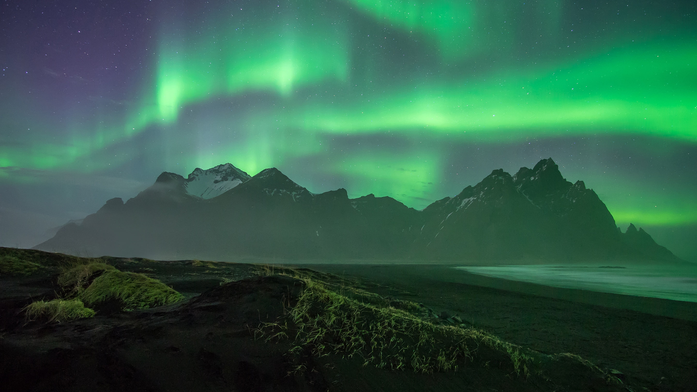
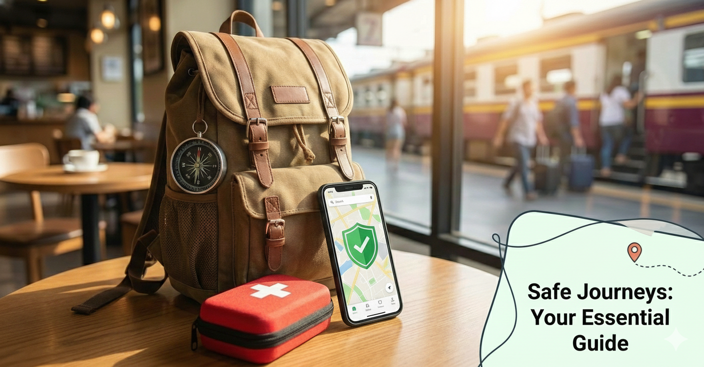

10 Hidden Gems to Visit This Winter
Discover the most underrated travel destinations that offer breathtaking views...

Discover the most underrated travel destinations that offer breathtaking views...

Learn about our essential tips to ensure your journey is secure and worry-free...